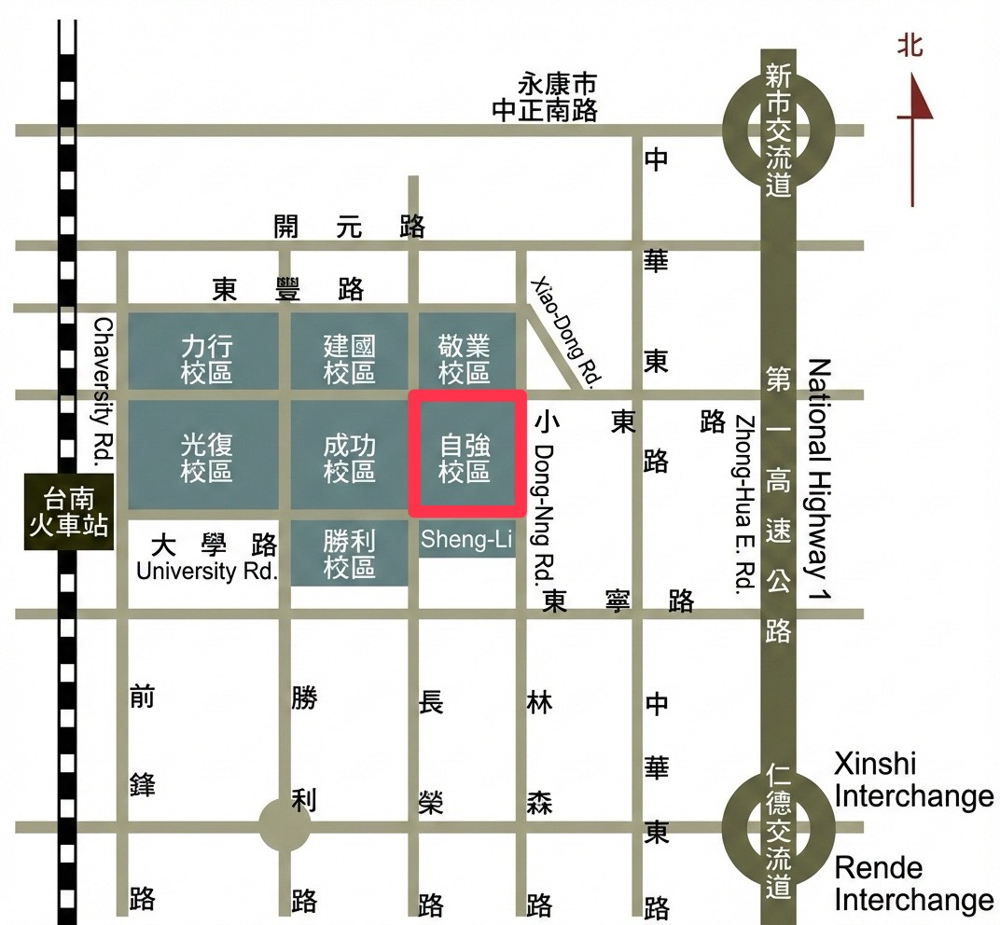
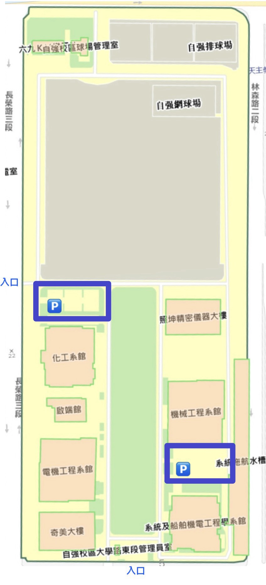
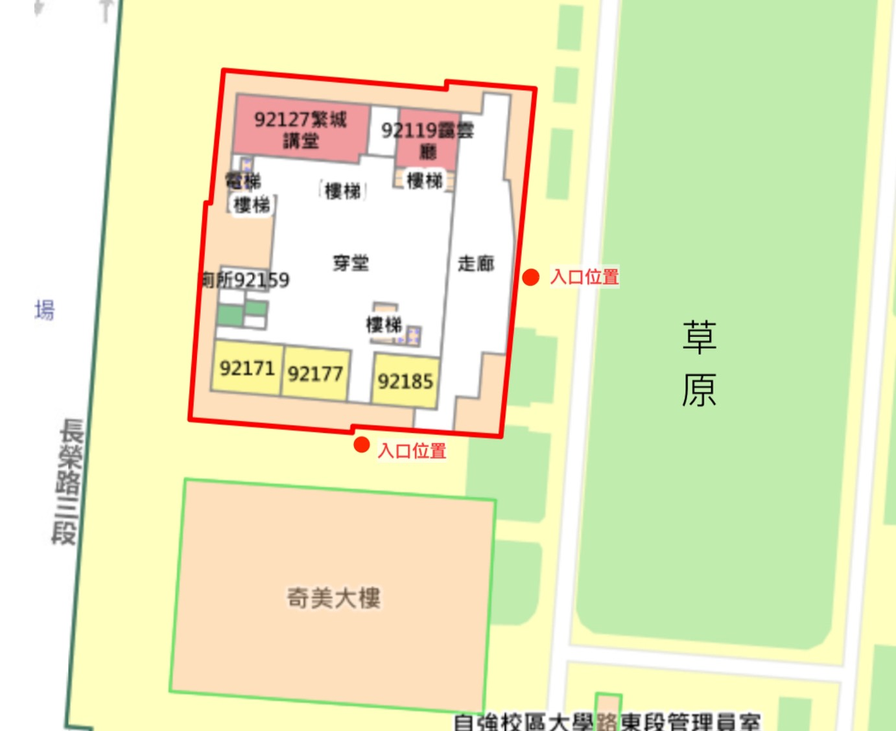
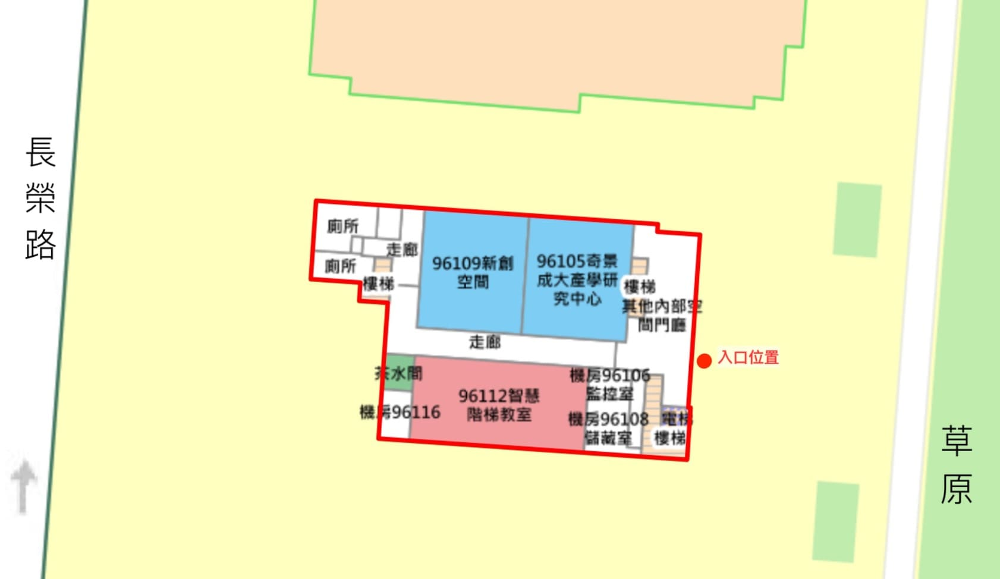

📍 課程地點
國立成功大學電機系館 / 啟端館 Openlab (台南市東區大學路 1 號)
📌 報到處： 電機系館一樓大廳
🗺️ 如何抵達&停車資訊
🌏 成大校區週邊概圖

位於台南火車站後站出口，延大學路步行約 15 分鐘即可抵達自強校區入口。
🔍 自強校區

建議停放於自強校區平面停車場。
📍 會場位置指引
成大電機系館（自強校區）
📌 報到處： 電機系館一樓大廳
📍電機系館

📍啟端館
